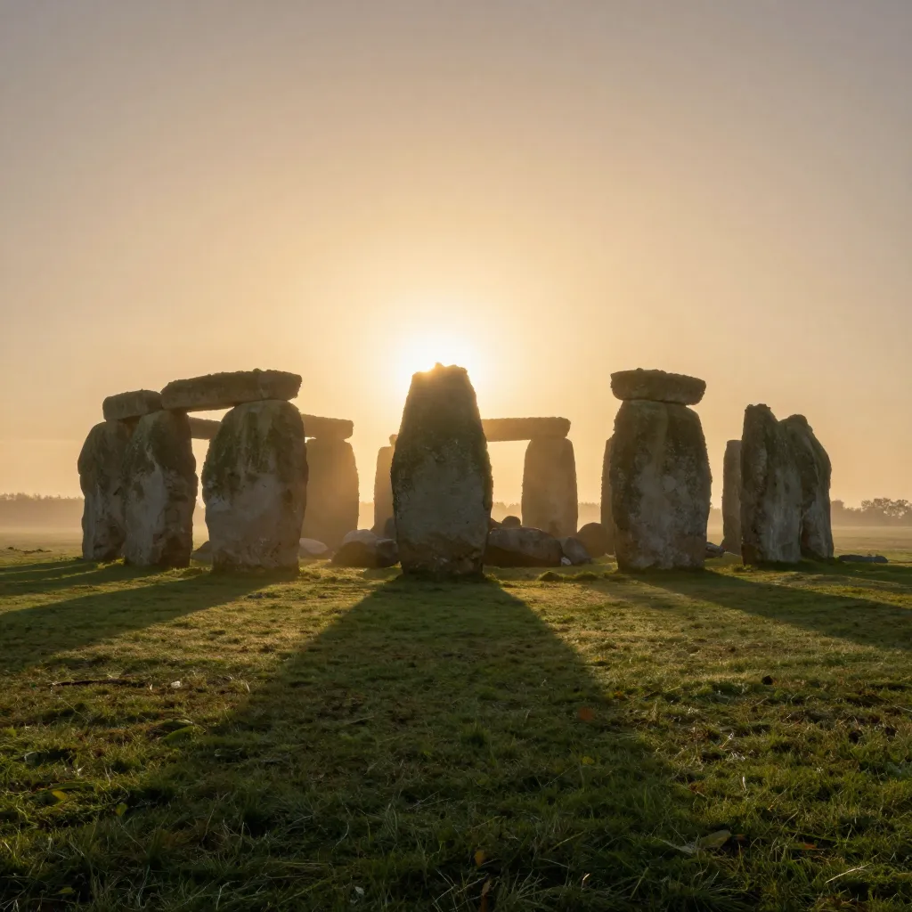

Stonehenge: The Ancient Monument That Still Defies Explanation

On Salisbury Plain in Wiltshire, England, the sky is huge and the grassland rolls to every horizon. The wind blows hard. In the middle of it stands a circle of ancient stones. People have been fascinated by it for thousands of years.
This is Stonehenge. It is a ring of huge stones called sarsens, with smaller stones called bluestones. They are set in lines that match the movements of the sun. The place was already sacred before the first stone was raised. It may be the most famous prehistoric monument on Earth.
Stonehenge was built in stages over about 1,500 years. The work began around 3100 BCE. It went through many phases of building, change, and reuse until around 1600 BCE. The builders had no writing, no metal tools, no wheels, and no pulleys. Yet they cut stones weighing up to 30 tons. They moved some of them more than 140 miles over land and water. They shaped them with stone hammers and raised them into forms that have lasted five thousand years in British weather. Why they did it, and how, is one of the great mysteries of the ancient world.
The land around Stonehenge is itself a giant monument. Archaeologists call it the Stonehenge Landscape. It is a huge ritual area of about 2,600 acres on Salisbury Plain. It holds hundreds of ancient features. There are burial mounds, ceremonial roads, earth banks and ditches, and the remains of old villages.
The Stonehenge Avenue is a ceremonial path with a ditch along each side. It joins the stone circle to the River Avon nearly two miles away. The Stonehenge Cursus is a huge rectangular earthwork about 1.8 miles long. It is older than the stone circle, and no one knows what it was for.
Durrington Walls lies about two miles northeast of Stonehenge. It is one of the largest henge monuments in Europe, a round earthwork nearly 1,500 feet across. People believe it was the village where the builders of Stonehenge lived while they worked. More than 350 burial mounds dot the nearby ridges. They hold the remains of important people buried over many centuries. In 1986, the whole landscape was named a UNESCO World Heritage Site.
Stonehenge was built in several clear phases. Stonehenge 1 (about 3100 BCE) was the first. It was a round enclosure with a ditch and a bank about 360 feet across. The entrance was on the northeast side. Inside it, builders dug a ring of 56 pits called the Aubrey Holes. They may have held wooden posts or bluestones. Burned human remains have been found in many of the holes. This suggests that the site was a graveyard from the start.
The ditch was dug into the chalk rock with tools made from deer antlers and animal bones. That was a huge amount of hand work. It needed a large community working together.
Stonehenge 3 I (about 2600 BCE) was the biggest change. The bluestones arrived. There were about 80 of them, each weighing 2 to 4 tons. They came from the Preseli Hills in west Wales, about 140 miles away. How did people of the New Stone Age move 80 stones so far without wheels or work animals? It is still one of the most debated questions in archaeology.
Stonehenge 3 II (about 2600 to 2400 BCE) brought the most famous parts. These were the great sarsen stones. They were pulled from the Marlborough Downs, about 20 miles to the north. Each is a block of hard sandstone weighing 25 to 30 tons. The builders shaped them into upright stones and flat stones that lie across the top, called lintels.
The famous trilithon is made of two uprights capped by one lintel. The pieces are joined with mortise-and-tenon joints, a woodworking trick in which a peg on one piece fits a hole in another. The tallest trilithon stood about 24 feet high. Later phases moved the bluestones around and made other changes. The site kept changing for more than a thousand years.
How the work was done is almost as mysterious as why. Tests by experimental archaeologists show that one sarsen of this size could be moved on a wooden sledge. Teams of dozens or even hundreds of people could pull it, using rollers and greased tracks. Each stone would take days or weeks to move.
The bluestones were an even bigger challenge. They traveled about 140 miles from west Wales. They may have gone by sledges on land, rafts on rivers, and boats along the coast. Some researchers once said that glaciers carried the bluestones during the last Ice Age. But the rock evidence strongly points to human work. The bluestones at Stonehenge match certain rock outcrops in the Preseli Hills too exactly for glaciers to explain. The builders shaped the stones with hammerstones made of quartz. About 50,000 pieces of these hammerstones have been found at the site.
A discovery in 2024 added a surprising twist. The Altar Stone is a flat green sandstone that lies in the middle of the monument. People had long thought that it came from Wales, like the other bluestones. But a team of geologists tested it. They used a way of dating tiny crystals called zircons, and also X-ray fluorescence, which reads the chemicals in a rock. The stone’s chemical signature matched rock in the Orcadian Basin in northeast Scotland, near the modern city of Inverness.
That means the Altar Stone traveled about 465 miles (750 kilometers) from northern Scotland to Salisbury Plain. The trip would have crossed rough highlands and rivers. The stone may also have gone by ship along the coast. It suggests that the people who built Stonehenge had trade and travel links along the full length of Great Britain.
In 2002, archaeologists found one of the most important graves near Stonehenge. It belonged to a man now called the Amesbury Archer. He was buried about 2,300 BCE, about three miles from the stone circle. His grave was rich. It held gold ornaments, the oldest gold objects found in Britain. It held copper knives, flint tools, archery equipment, and Beaker pottery.
Scientists studied his teeth with isotope analysis, which reads the chemical marks left by the water and food of a person’s childhood. It showed that he grew up not in Britain, but in the Alps of central Europe. That means modern Switzerland or southern Germany. His presence suggests that Stonehenge was part of a web of links across Bronze Age Europe.
Another group of graves, the Boscombe Bowmen, was found in 2003. Isotope tests showed a different pattern. These people had spent part of their lives in Wales, in the Preseli Hills region where the bluestones came from. It is a tempting idea that they helped bring the bluestones to Stonehenge.
From 2010 to 2014, the Stonehenge Hidden Landscapes Project looked at the land around Stonehenge. It was a team effort between the University of Birmingham and the Ludwig Boltzmann Institute. They used ground-penetrating radar, magnetometry, and other remote sensing tools. These see below the ground without digging even one trench.
The results were astonishing. The team found a large network of unknown ancient features. They included ritual monuments, burial mounds, village enclosures, and ceremonial routes. All had lain hidden under the grass for thousands of years. One of the most dramatic finds was a row of up to 90 buried standing stones at Durrington Walls. People nicknamed it “Superhenge.” It would have been bigger than Stonehenge. It was later found to have been taken down on purpose and buried.
The project showed that Stonehenge was not alone. It was the center of a huge, busy ritual landscape far more complex than people had thought.
What was Stonehenge for? People have argued for centuries, and no one theory has won everyone over. The best-known modern theory came from the Stonehenge Riverside Project (2003 to 2009). It was led by Mike Parker Pearson, an archaeologist at University College London.
His team said Stonehenge belonged to a pair of ceremonial sites. Durrington Walls had timber circles and signs of feasting. They saw it as the “domain of the living,” linked with wood, life, and celebration. Stonehenge had a stone circle and burials of burned remains. They saw it as the “domain of the dead,” linked with stone, permanence, and the memory of ancestors. The Avenue joined Stonehenge to the River Avon and so tied the two sites together. People would walk in procession along the river, from the wooden place of the living to the stone place of the ancestors.
Other theories look at Stonehenge’s astronomy. The monument’s axis lines up with the summer solstice sunrise to the northeast. The solstice is the longest day of the year. It also lines up with the winter solstice sunset to the southwest. William Stukeley, an antiquarian of the 18th century, first wrote down these lines carefully. An antiquarian is a person who studies old things.
In 1963, astronomer Gerald Hawkins published a controversial study. He said that Stonehenge worked as a “Neolithic computer” that could predict eclipses. Archaeologists have mostly rejected his bigger claims. But the solstice alignment is accepted by all, and it is still one of the site’s best features.
Each year, thousands of people gather at Stonehenge for the summer solstice sunrise. The custom may be as old as the monument. If so, it could be the longest continuous ceremonial tradition in human history.
Some researchers say Stonehenge was a healing center. They say people believed the bluestones had healing powers. They point to skeletons found near Stonehenge that show signs of illness and injury. The truth may be that Stonehenge had many uses in its 1,500 years. It may have been a graveyard, an observatory, a ceremonial center, a healing shrine, a monument to ancestors, and a show of power. Its meanings may have grown as each new generation came back to the stones.
People have studied, measured, dug, photographed, scanned, and analyzed Stonehenge for more than 400 years. It still has not given a final answer. We know when it was built. We know where the stones came from: the sarsens from the Marlborough Downs, the bluestones from Wales, and the Altar Stone from Scotland. We know how they were shaped, with quartz hammerstones, 50,000 pieces of which lie around the site. We even have a good idea of who built it. They were communities of the New Stone Age and the Bronze Age, linked across hundreds of miles.
But we still do not know why. Was it a graveyard? A calendar? A temple? A show of power? A healing center? Perhaps it was all of these, and more. Perhaps Stonehenge still fascinates us, five thousand years after the first ditch was cut into the chalk, because it does not have just one answer. It has many. It means something different to each generation that stands before it. The builders made more than a circle of stones. They made a mirror in which every age sees itself.
References & Further Reading
Wikipedia: Stonehenge Landscape — The broader ritual complex surrounding the stone circle
Wikipedia: Durrington Walls — The large henge settlement where Stonehenge’s builders likely lived
📚 Recommended Reading: Stonehenge (on Amazon) — As an Amazon Associate, we earn from qualifying purchases.
Editorial note: Stonehenge is documented through centuries of antiquarian research, modern archaeological excavation, and cutting-edge scientific analysis including radiocarbon dating, isotope analysis, and ground-penetrating radar. See our Editorial Policy.